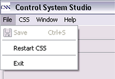

Control System Studio

Control System Studio
|
|
Jump Start |
This document is intended to assist new CSS users to get a first orientation when working with the system. Therefore the very basic features are explained shortly, along with a brief description of how to navigate within the software.
When you start the CSS for the
first time, it will look like this:

All features of the CSS are accessible through the CSS Menu Bar. It provides the following menu entries:

New
Create a new folder, resource, ...
Switch Workspace...
Change the workspace of the CSS instance.
Export preferences...
Write current preferences of the CSS instance in a file.
Open Workspace Navigator...
Open the view 'Workspace'.
Import...
Import resource from CVS in the workspace.
Exit
Shut down your CSS installation.

All available CSS applications are linked into the CSS menu. Depending on your CSS distribution this menu provides a subset of the following entries (initially this menu will be empty. To load applications see: 2.4 Help -> Software Update):
Display
Display applications (e. g. The Synoptic Display Studio).
Alarm
Alarming tools and applications.
Trends
Trend tools and applications.
Diagnostic Tools
Diagnostic tools and applications.
Configuration
Configuration tools and applications.
Management
Management tools and applications.
Editors
Editors.
Utilities
Utilities.
Preferences
Open the central CSS configuration dialog that provides access to all CSS settings.
The Quickstart menu holds links to Synoptic Displays in the workspace. They can be added via context menu of a display.

Open in New Window
Open a new CSS window.
Open Perspective
Select and open a particular CSS perspective. In the CSS context, a perspective is a set of user interface elements that are positioned in a certain way.
Show View
Open a particular CSS view. In the CSS context, a view is an element of the user interface that displays something and can be freely arranged by the user.
Working Sets
Define and manage Working Sets. Working Sets groups projects in the workspace.

Welcome
Open this Jump Start document.
About CSS
Open the “About” dialog that contains the CSS license agreement.
Help Contents
Open the CSS help system. There you may find a more detailed description of the basic user interface concepts and all system settings.
Key Assist...
Open an overview of all shortcuts.
Cheat Sheets...
Shows available Cheat Sheets. Cheat Sheets are step by step documentations.
Software Updates
Manage the local CSS installation by installing and updating features. -> find and install -> search for new features to install -> DESY CSS
The CSS contains its own console. This console display system messages of certain events and information about occurred errors.
Click on the Console tab and try
to move it around. You may even drag it outside of the main window.
Try to get familiar with the Eclipse way to handle windows. (Drag the
outside console back to an existing tab – and so on …)
SDS has its own perspective: Menu 'Window' → 'Open Perspective' → 'Display Development'. There are some example and training displays integrated that demonstrates the functionalety of SDS: Menu 'CSS' → 'Install Synoptic Display Demo Displays'. The training displays are in the workspace folder 'SDS Demo Display/Training'.
For some displays a SoftIOC with special EPICS databases (Folder /SDS Demo Display/Training/EPICS_DBs_TrainingIOC) is necessary. A SoftIOC for MS windows can be found on the CSS Homepage. The databases are part of that distribution. For other OS you can copy the EPICS databases from the SDS directory mentioned above to your IOC load directory.
There are also some help pages available in CSS
Since CSS version 1.1 all common plug-ins
that do not need additional environment are integrated in the CSS product. The following video
will briefly represent, how to load and install special
plug-ins to CSS from the update site.
Please accomplish the shown steps parallely.
After
the installation you will find several new options listet under
“CSS” in the menue bar.
The alarm applications from the DESY update site requires a JMS and LDAP server. Information about the installation and configuration for the JMS and LDAP server are on the CSS homepage.